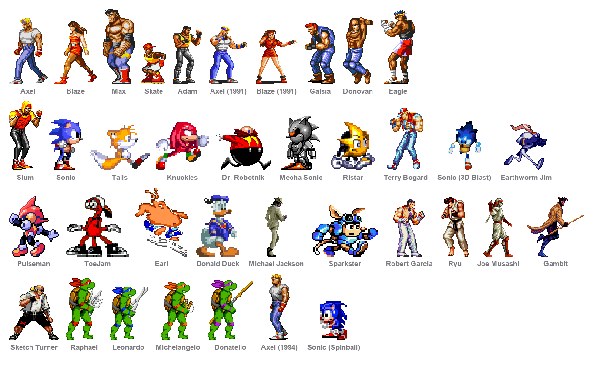
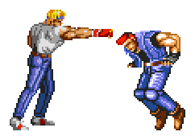
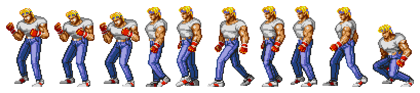

Eleven Streets of Rage characters who live on your Mac's desktop. They pace the length of the screen, throw the odd punch, and square up when two of them end up near each other.

A desktop pet with nothing to sell you: no network access, no analytics, no bundled anything, no upsell. They are windows that draw a sprite. Quit them from the menu bar and they're gone.
They don't talk, either. They grunt, thud and shout with the game's own sound effects, and their conversations are entirely physical.
At their own pace over their own distances, the length of the screen. A heavy Max and a Skate on rollerblades stay recognisably different.
Two within 420 points of each other stop wandering and trade blows — taking turns, facing each other, the one not swinging turning to watch.
Energy that rises with attention and decays without it. They notice your cursor, get bored of being poked, and settle down when you leave the keyboard.
A slider that's theirs alone, independent of the system volume. Mute them in one click.

It has the shape of a conversation — take turns, face each other, nobody moves while somebody else is mid-swing — with the content physical: one swings, the other blocks or takes it, then counters. Let Them Fight in the menu walks two of them together first, rather than waiting for the wandering to bring them close.
Every sprite set faces the viewer's left unmirrored, so turning to face somebody means mirroring.

A walk cycle played while the window jumps 500 points in half a second reads as moonwalking, which is exactly what this looked like before each character got its own pace. Travel time now comes from the character's own speed in points per second, so the animation matches the ground covered.
| distance | speed | beat | |
|---|---|---|---|
| Axel | 600–2200 pt | 165 pt/s | 7–16 s |
| Blaze | 600–2200 pt | 190 pt/s | 6–14 s |
| Max | 500–1600 pt | 120 pt/s | 11–24 s |
| Skate | 900–3000 pt | 300 pt/s | 5–11 s |
macOS 11 Big Sur or later, on Apple Silicon, plus the Xcode command line tools. A clone builds and runs directly — the sprites are included.
git clone https://github.com/shadi0077/megadrive-buddies.git
cd megadrive-buddies
./build.sh && open "build/MegaDrive Buddies.app"There's no Xcode project. build.sh compiles the sources with
swiftc and assembles the .app itself — about seven
seconds and seven megabytes.
A rip is one image with frames in irregular rows. The cutter finds bands of content, then columns, then splits each column at its own gaps. The exceptions are the whole job: captions printed beside a sprite land inside its frame at a perfectly normal size, colour swatches sit among the sprites, and the Streets of Rage 1 rips have no whole-body walk at all — that game composited one from separate torso and leg sprites, so those frames are disembodied legs.
The worst of them: one column of Galsia's sheet holds two stacked sprites, so they came out as a single frame and he rendered as a man with a second man growing out of his head. Nothing about the frame's size gives that away. The cutter splits columns now, and a test checks every shipped frame holds exactly one sprite.
The rips don't cover the same ground — the Streets of Rage 2 four have a
dozen moves each, an enemy sprite has three. Naming a clip directly means a
character without it performs nothing at all, which is how Axel came to spend an
afternoon doing cheer, a clip he hasn't got. Shared routines now go
through a picker that drops what a character lacks, and the test suite fails on
any clip named in a personality that the sprite set doesn't have.
The rip names voice clips V00–V52 and effects
00–49, with no index of what any of them are. The
grouping — specials shout, knockdowns thud, everything else grunts — is inferred
from that naming plus duration. It's an inference, not a transcription, and it
holds up because the categories are coarse.